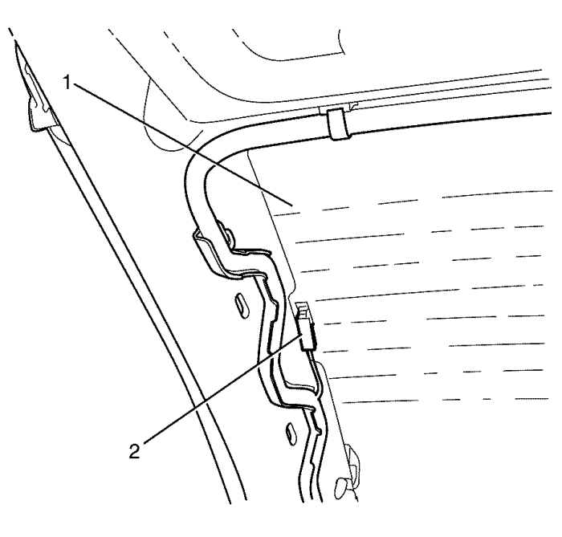
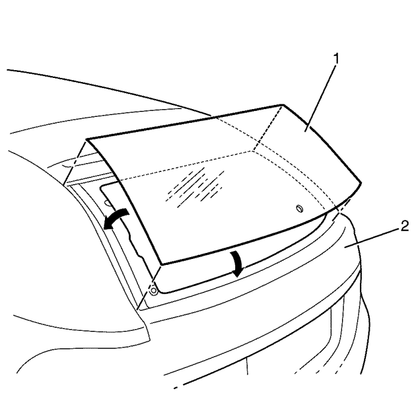

Sustitución de la luneta del portón levadizo. - Brasil
Herramientas especiales
| • | S-0201964 Dispositivo de extracción de cristales pegados |
| • | Ventosas para la manipulación de cristales |
| • | Utilice un pegamento autoadhesivo aprobado por GM |
Si desea informarse sobre herramientas regionales equivalentes, consultar Herramientas especiales
Procedimiento de desmontaje
Advertencia : Al trabajar con cualquier tipo de cristal o chapa fina con bordes al descubierto y sin acabar, utilice gafas y guantes de seguridad homologados para reducir el riesgo de lesiones personales.
Advertencia : Si una ventana está agrietada, pero intacta, haga una cruz en la ventana con cinta adhesiva para reducir el riesgo de daños o lesiones físicas.
Nota: Cuando se vaya a retirar o montar un dispositivo que mantenga un componente abierto, proporcione un soporte alternativo para evitar daños personales o materiales en el vehículo.
- Retirar el brazo del limpialuneta trasero. Consultar Sustitución del brazo del limpialuneta trasero : Carrocería larga .
- Retirar la moldura del embellecedor lateral de la luneta del portón levadizo. Consultar Sustitución de las molduras de guarnecido del portón trasero .

- Desemborne los conectores eléctricos de la luneta del portón trasero (2) de la luneta del portón trasero (1).
- Desmonte la tercera luz de freno. Consultar Sustitución de la tercera luz de freno : Carrocería larga → Carrocería corta .
Nota: Antes de cortar la ventanilla fija, aplique una capa doble de cinta adhesiva protectora alrededor del perímetro de las superficies pintadas y del revestimiento interior.
- Proteja las siguientes piezas de los cristales rotos, los asientos y la moqueta.
- Cierre el portón levadizo.
- Retire la ventanilla del pegamento autoadhesivo del siguiente modo:
| • | Deje una base de uretano de unos 2 mm (0,078 pulg.) aproximadamente en el reborde a fijar-soldar. |
| • | La única lubricación adecuada es agua limpia. |
| • | Utilice el Dispositivo de extracción de cristales pegados S-0201964. |
Nota: Tenga cuidado de no cortar los pasadores de ubicación de las esquinas superiores izquierda y derecha al retirar la ventanilla. Si se cortan los pasadores de ubicación, será necesario utilizar cinta adhesiva protectora para mantener la ventanilla en su sitio hasta que se seque el pegamento autoadhesivo.
- Empiece a cortar entre la ventanilla de la esquina superior central y el portón trasero.
| 8.1. | Realice este procedimiento desde el interior del vehículo. Introduzca la herramienta Dispositivo de extracción de cristales pegados S-0201964 (1) entre la ventanilla de la esquina superior central y el portón trasero, perforando de este modo el pegamento. |
| 8.2. | Mueva el alambre cortador a lo largo del borde exterior de la ventanilla. |
| 8.3. | Retire la herramienta Dispositivo de extracción de cristales pegados S-0201964. |
| 8.4. | Realice este procedimiento desde el interior del vehículo. Monte la herramienta especial de alambre cortador Dispositivo de extracción de cristales pegados S-0201964 (1). |
| 8.5. | Realice este procedimiento desde el exterior del vehículo. Monte la herramienta especial de alambre cortador Dispositivo de extracción de cristales pegados S-0201964 (2). |
| 8.6. | Con la ayuda de un asistente, utilice la herramienta especial Dispositivo de extracción de cristales pegados S-0201964 (1) para sujetar el alambre cortador; tire de él empezando por la parte exterior, hacia atrás y hacia delante, soltando la ventanilla del pegamento. |
| 8.7. | Mientas corta la ventanilla, vuelva a colocar el alambre cortador y las herramientas especiales de modo que pueda cortar totalmente el pegamento a lo largo de la ventanilla. |
- Retire la ventanilla (1) del vehículo (2) con la ayuda de un asistente. Utilice para ello ventosas para la manipulación de cristales
Procedimiento de montaje
- Coloque la ventanilla sobre una superficie suave, limpia y seca.
- Si se vuelve a utilizar o se sustituye la ventanilla, utilice la herramienta adecuada para retirar el cordón de pegamento autoadhesivo de la superficie de la ventanilla y deje un reborde a fijar-soldar de unos 2 mm (0,078 pulg.) aproximadamente.

- Limpie la zona de unión sobre la ventanilla.

- Aplique imprimación para cristales pegados y déjela secar según las instrucciones del fabricante del pegamento autoadhesivo.

- Aplique la imprimación autoadhesiva (2) alrededor del perímetro de la ventanilla (1) y déjela secar según las instrucciones del fabricante del pegamento autoadhesivo.

- Corte el difusor del aplicador con un corte en V para aplicar el pegamento autoadhesivo.

Nota: Si se cortan los pasadores de ubicación, será necesario mantener la ventanilla en su sitio con cinta adhesiva protectora hasta que se seque el pegamento autoadhesivo según las instrucciones del fabricante.
- Presione suavemente la ventanilla (1) sobre el cordón de pegamento autoadhesivo hasta que se asiente completa y uniformemente a 1 mm (0,039 pulg.) por debajo de los laterales del marco del portón trasero.
Nota: Siguiendo las instrucciones de montaje del pegamento autoadhesivo, utilice nafta para retirar el exceso de pegamento autoadhesivo en el plazo de 30 minutos. De lo contrario, sólo será posible retirar el exceso de pegamento autoadhesivo mediante procedimientos mecánicos.
- Utilice cinta adhesiva protectora para mantener la ventanilla en su sitio hasta que se seque completamente el pegamento autoadhesivo.
- Asegúrese de respetar el tiempo de endurecimiento del pegamento indicado en las instrucciones del fabricante antes de desbloquear el vehículo.
- Retire la capa doble de cinta adhesiva protectora que hay alrededor del perímetro de las superficies pintadas y del revestimiento interior.
Nota: No dirija una corriente fuerte de agua a alta presión al pegamento autoadhesivo recientemente aplicado.
- Utilice un pulverizador suave de agua caliente para efectuar inmediatamente la prueba de agua en el cristal.
- Compruebe la estanqueidad del cristal.
- Si se detecta alguna fuga, utilice una espátula de plástico para aplicar más pegamento autoadhesivo en el punto de fuga.
- Vuelva a comprobar la estanqueidad del cristal.
- Mantenga las condiciones que se indican a continuación para secar de forma adecuada el pegamento autoadhesivo:
| • | Baje parcialmente la ventanilla de una de las puertas para evitar acumulaciones de presión cuando cierre las puertas antes de que se produzca el secado del pegamento autoadhesivo. |
| • | No conduzca el vehículo hasta que el pegamento autoadhesivo se haya secado. Consulte los tiempos de secado indicados con anterioridad. |
| • | No utilice aire comprimido para secar el pegamento autoadhesivo. |

- Limpie cualquier exceso de pegamento autoadhesivo de la carrocería.
- Abra el portón trasero
- Monte la tercera luz de freno. Consultar Sustitución de la tercera luz de freno : Carrocería larga → Carrocería corta .
- Emborne los conectores eléctricos de la luneta del portón trasero (2) a la luneta del portón trasero (1).
- Monte la moldura del embellecedor lateral de la luneta del portón levadizo. Consultar Sustitución de las molduras de guarnecido del portón trasero .
- Retire la capa doble de cinta adhesiva protectora de la zona que hay alrededor del perímetro de las superficies pintadas y del revestimiento interior.
- Monte el brazo del limpiaparabrisas trasero. Consultar Sustitución del brazo del limpialuneta trasero : Carrocería larga .
- Cierre el portón levadizo
| © Copyright Chevrolet Europe. All rights reserved |